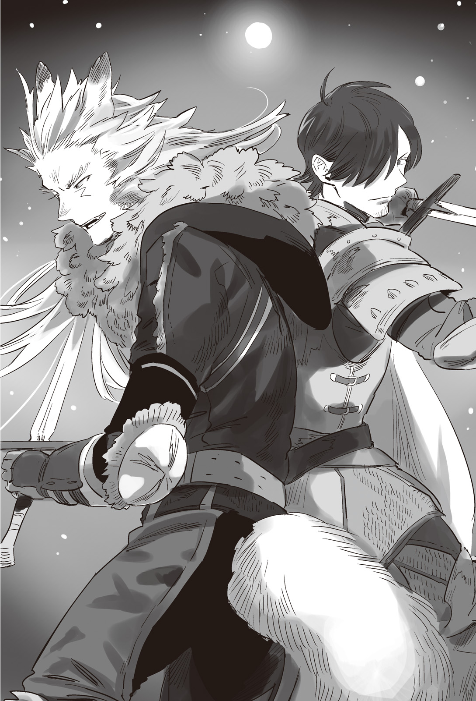

Chapter 4 – The Avenger’s Stage
.
Part 1
Ninliver was the second biggest port city in Nedras Kingdom.
At 5 AM when the early morning’s mist was covering the sea surface, the early riser fishermen were patching up their net, polishing their harpoon, and preparing to go fishing.
The high tide came and the seawater was surging until the height of the wharf. In some part the water reached until above the wharf and washed the path.
Today something monumentally foreign was drawing near unnoticed toward such peaceful daily scenery.
「What’s that……」
They were the fishermen of a small country that never knew war until now.
The navy of their country was really small and only patrolled the coast at best, so they never saw a large schooner like La Mancha before.
They were bewildered seeing the appearance of the huge fleet. It couldn’t be helped that they were unable to understand the situation.
However when they saw the gigantic ship that looked like a giant monster sailing behind the fleet, they finally realized that a complicated situation had arisen.
「G-go tell the lord……」
「T-take the women and children running to the mountain! It’ll be too late if we don’t hurry!」
The suddenly urgent situation pushed the fishermen into panic and they ran around in confusion.
At that time the local soldiers of the count house who were maintain the public order of Ninliver noticed the commotion at the harbor.
Unlike port city Lagoon that had the navy base in it, Ninliver that was nothing more than a territory of a count only had them to respond to this situation right away.
「It’s the combined fleet of Majorca Kingdom and Sanjuan Kingdom! No, the battleship at the forefront has the royal flag of Trystovy!」
「What did you say? Don’t tell me King Baldr is personally here?」
「W-what should we do?」
「Stupid idiot! This isn’t something that we can do anything about! Go tell the lord count quickly!」
The burden of dealing with an army that was personally led by Baldr was too heavy for private soldiers of a count house like them.
Even if that wasn’t the case, for ordinary people like them, they perceived Baldr like a demon, an existence from the world of mythology.
The impact of a beastman becoming a king was just that great, especially for the believers of Europa Church.
.
「Count-sama! COUNT-SAMAAAAAAAAAAAAAAAA!」
「What is it, you’re noisy.」
The count who was in a light sleep was forced awake by the panicked scream of a soldier. He got up from his bed in a bad mood.
「This isn’t the time to leisurely change clothes! Please hurry!」
「Just what in the world is going on?」
「Trystovy and its allied army are going to land here!」
「S, SAY SOMETHING LIKE THAT SOONEERRRRRRRRRRRRRRRRRR!」
The count wasn’t thinking to fight and repel the enemy at all.
Even if the army landed, they would only pillage the city and set it ablaze before leaving anyway. If there was no way to prevent that, it was only natural for him to prioritize his own life.
「Sound the tsunami warning bell! Tell the people to run to a high place and stay there quietly until the enemy leave!」
「Yes my lord-!」
Even a place like Ninliver that had never even dreamed of this place turning into battlefield had the experience of a great disaster of tsunami in the past, so it was common knowledge here to evacuate in emergency.
From the result, that decision was correct.
Because even if Baldr’s army had no such intention, the organization called an army was something that would bring harm just from moving.
The count scuttled in panic to escape while only wearing his pajama. His family was also following his example.
And so Baldr and his troops easily occupied Ninliver that had been completely deserted. From Gigante there weren’t just soldiers, military supplies like food or cannon were also unloaded one after another.
「Don’t tell me……they are planning to stay here?」
The count who was observing the situation from a high place understood the severity of the situation when he saw that far from pillaging, the army was unloading supplies orderly on the land.
The enemy wasn’t coming here like passing pirates.
They were occupying Ninliver, and then──the count realized the army’s true objective when his thought reached that far.
「They’re planning to attack the capital directly-!」
Now that this country’s main force was dispatched to Posada Village at the border, the capital Hazuz only had the reservists to maintain the public order and the royal guards in it.
Posada Village was too far for the main force to turn back at this point.
In the end, would the cowardly Nedras Kingdom army──that was the impression that the count held since the government became Answerer Kingdom’s puppet──be able to oppose that Baldr?
「──Should we run?」
An old retainer who had accompanied him since his youth asked him that. The count’s expression twisted.
If he ran, how far did he need to run? If he ran until the capital, was there any guarantee that they could win against Baldr? Wouldn’t he just meet an even more horrible experience there?
「Do you think our country can win?」
「If Answerer Kingdom get serious and send reinforcement, then perhaps.」
「That’ll be difficult. They can land on Ninliver like this, that means they can also do the same thing with Answerer Kingdom.」
From now on, Answerer Kingdom would be wary that the enemy would also land in their country and they would become unable to cut corners with the security of their own territory.
The count was skeptical that Nedras Kingdom would be able to receive any worthwhile reinforcement in such situation.
「──There was a rumor that his majesty Baldr sent food assistance because he is unable to watch the distress our country is in, wasn’t it?」
「Yes, according to the merchants, it wasn’t the result of negotiation or anything like the royal court claimed, but it was because of his majesty Baldr’s good will.」
「We can’t honestly believe that……but, at the very least we also won’t be killed with no question asked. I have to secure the citizen’s safety at the very least.」
To be honest, the count had given up on Nedras royal court.
He was going to obey Baldr because he thought there was no way to win, and if Baldr became a better ruler──though the biggest problem was whether he would really become the winner or not──the count hardened his resolve to bet on that.
「Send a messenger to ask for an audience. Tell his majesty that I have the intention to cooperate with Trystovy Kingdom.」
「As my lord command.」
The count’s decision was completely correct.
After all the road that connected Ninliver to the capital was being watched strictly by a beastman group in order to cut off the flow of information.
And then the first report was only brought to Hazuz after two days had passed since the landing.
.
Part 2
「──You said that beast king had appeared at Ninliver?」
At first Duke Vassily doubted his ears when hearing that absurd report.
Baldr should appear as reinforcement to General Ramillies who was at Posada Village. In the first place he never heard a king crossing the sea to land on enemy country.
「Is there no mistake about this report?」
「That’s, Ninliver is already occupied. King Baldr is waiting for the remaining supplies and troops to be unloaded on land before beginning to march to the capital. This is the information that was conveyed by a messenger from the count territory to our merchant that regularly visited that area.」
「And how is that messenger doing?」
「The report said that he is heavily wounded and is currently in critical state.」
「And? How many is the enemy’s number? When will they arrive to this capital?」
Cold sweat trickled down from Vassily’s forehead.
It was just as Count Ninliver predicted, right now there wasn’t any sufficient military strength remaining in the capital.
Furthermore the opponent here was the devil who repelled Haurelia Kingdom army by his own and climbed up until the position of king.
「Currently there is around a thousand troops. There is another fleet carrying 3000 troops that will arrive later.」
「It should be impossible to land at that Ninliver when it’s low tide……if it’s now」
Vassily committed a fatal mistake here.
A country was ruined because of a fatal blunder that was committed in the fatal situation. And now this Vassily was making such fatal decision that would ruin a country without even trying to ascertain the veracity of the information.
「This time while even more enemy troops haven’t landed is the aid of heaven for us! Send out all of our reserve force to destroy that filthy beast king!」
Currently the reservists that were stationed in this capital numbered 2000. There were also 500 royal guards. If they could also gather the soldiers from the nearby nobles, they would be able to form an army of 3000 or 4000.
Right now was the perfect chance while the enemy still numbered 1000!
It was unknown whether the person himself was aware of it or not, but the reason Vassily arrived at such foolish conclusion was because of his cowardice.
To be safe, he should gather all the soldiers in the capital and holed up in the castle. That would be the safest strategy.
Vassily couldn’t do that because he couldn’t bear to be placed right in the middle of a battlefield.
He couldn’t even conceive exposing his own life to danger while the battlefield music from spear and sword was being played. The farther the battlefield was from the capital, the better it was for him.
This kind of human who unconsciously wanted to place themselves in the safe area existed in not a few numbers.
Someone like Vassily who drew in the military force from Answerer Kingdom for the sake of his own safety, what kind of way of thinking such person had?
It was difficult to predict it, but it wasn’t impossible.
And even if the prediction was wrong, the second and the third plans had been prepared.
.
「──Even so, it send shivers to my back when his majesty’s prediction is right on the mark to this degree.」
A silver haired man was watching the cavalries leaving the capital and leaving it stark naked from above a hill with a sharp gaze.
It was the Phantom Lagunitas.
When he welcomed the messenger from Baldr, he thought of what he was told as completely a wild tale, but right now he was struck with astonishment seeing everything becoming a reality.
He wondered if there was nothing impossible for the beast king.
「This is simply a future prediction with high probability you know?」
「I’m saying that the precision of that prediction is just strange.」
「Well, his majesty is strange isn’t something new.」
Nelson who was sent to Nedras Kingdom as a messenger and hid in this country together with the resistance shrugged with a self-satisfied look.
「It’s just like the matter with the wheat, I never thought that his majesty would really land at Ninliver. Is a country really something that can be led around by the nose so easily like this?」
The subjugation army that was nothing more than reservist soldiers being put together would be no match against Baldr. They would surely get annihilated hands down. A mere 3000 troops against the 5000 elites under Baldr’s command didn’t have any hope of victory from the start.
Even the main force of 50000 troops that were confronting General Ramillies at the border wouldn’t be able to display their strength sufficiently when the capital and the supply line were seized by this side.
The fate of Nedras Kingdom was already decided.
The only thing that had been decided was the process to reach that point.
「This is the stage of avenger that I have long awaited for. I guess I should play my role splendidly on it then.」
It wouldn’t be Baldr, but Lagunitas who was a citizen of Nedras who would take down the capital. There was a meaning in this arrangement.
Most likely Baldr had also taken into consideration that Lagunitas would want to take down Vassily with his own hand no matter what.
Even the position that Lagunitas would take in the management of Nedras Kingdom that got occupied by Trystovy alliance had already considered beforehand.
Our beast king has formulated a really terrifying stratagem.
「──Nelson-dono, is his majesty the beast king had been like this since his student days?」
「That’s, well, at that time he was a bit more docile than now though. But the way he is like a jack-in-the-box that throws out something absurd from the box that you thought as mediocre hasn’t changed at all.」
「What a shame. I also want to try sharing such time together with his majesty. The me right now is filled with nothing but awe toward his majesty.」
He didn’t know what kind of position he would be placed in after this, but Lagunitas had hardened his resolve to swear loyalty to Baldr as the beast king regardless of what happened.
When the subjugation army had vanished beyond the horizon, the sun was slowly tilting toward the west.
「──Now then, Vassily. I shall return my father’s debt to you now. This Lagunitas shall stake his soul for it.」
.
Part 3
The Nedras Kingdom beastman corps that was led by Lagunitas only numbered around 300 at best.
The resistance in the past could count 2000 fighters at maximum, but right now this was all their remaining strength.
Their number had been halved by General Mikhail Kalashnikov. And then they lost half of their comrades even more due to General Vladimir’s divide and conquer strategy.
Without Baldr’s outlandish scheme to send wheat support for free, the brunt of hatred of the humans who were hungry might be pointed toward them, turning them into the sacrifice of the tyrannical regime.
That was just how dangerous their situation was.
Answerer Kingdom was temporarily praised as liberator after disposing the exiled dukedom nobles, but then their status relapsed back to being oppressor once more when they hindered Baldr’s food aid.
The commoners were really fast when doing an about-face. The provision of information to Lagunitas increased sharply while the risk of betrayal also dropped dramatically.
There was even a time when he felt detest toward such self-interested nature of the commoners.
It was because of that self-interested nature that they could easily betray others. They did that while making self-satisfied look as though they were the only injured party.
「──Weakness isn’t a sin but a punishment. That’s exactly why those who stand above them must not forget the feeling of pity toward them.」
Lagunitas finally understood the meaning of the words of his father, Count Isaac Kovalenko.
Being able to risk one’s life for something immaterial like pride or dignity was a luxury that was only afforded for the strong.
The commoners who lived their daily lives completely absorbed in their survival had no leeway to hold such feeling.
That was exactly why the statesmen had to give them leeway in their lives. Even if commoners without any leeway were an existence that was more convenient to rule over.
「The prosperous society where there is no discrimination between human and beastman that father aimed for──it has come until right before my eyes.」
The revolutionary wheat variety M-10, and then also clothing material for cheap and in great quantity. Baldr had developed them and now he was trying to popularize them.
Finally even the commoners would be able to have time to enjoy pointless leisure.
If that happened, even if it had to take time the peace between beastman and human would surely become reality too.
「In order for me to be able to play a part in the work of his majesty the beast king too──you shall receive the punishment for all the suffering that my father and my people has gone through, villain Vassily!」
Three hundred beastmen slipped into the dim darkness of the night and soundlessly rushed toward the castle gate.
.
「──Oi, time for shift change.」
A knight lightly tapped the shoulder of his colleague who was standing straight at the gate. Then he witnessed his colleague crumbling from his knee like a doll with its strings severed.
「Wha──」
「You let your guard down too much.」
He sensed a presence behind him. But the moment his mind registered that, something like a drill pierced the knight’s brain and he expired without even being able to make any voice.
Lagunitas laughed at this pathetic state of his enemy.
Even though not even half a day had passed since the subjugation army departed to Ninliver, they still thought that this capital was the only place that wouldn’t turn into a battlefield?
No, Vassily wanted the battle to be decided outside of the capital exactly because he feared that.
If by any chance the subjugation army was defeated, don’t mention holing himself in the castle to withstand a siege, he would definitely abandon everything and sought asylum to Answerer Kingdom.
He was unable to personally stand in the firing line and fight.
Vassily was a man who was contracted with such disease.
「Barbrea, take a hundred with you and secure the queen dowager and his majesty. Don’t let them get away no matter what.」
「Understood.」
「Gansoult, blockade the main palace after I charge in. Don’t let any reinforcement enter.」
「Roger.」
「Nelson-dono, you should come with me.」
The palace of Nedras Kingdom was roughly divided into three sections.
The first section was the main palace where the regent Vassily was attending to government affairs. The second section was the Crystal Palace where the queen dowager and the king were living. And then the third section was the inner palace.
Securing the king’s personage who was living together with his mother should be regarded as the most important objective of this mission.
However Lagunitas had no intention of giving Vassily to anyone else.
The catastrophe occurred in the blink of eye.
The beastman corps broke through the castle gate and soundlessly killed the knights who still hadn’t realized the invasion that was going on one after another.

Lagunitas’s men were the elites who survived until now after contending with that Mikhail Kalashnikov.
The knights here were far away from the battlefield with their guard down──furthermore the majority of them were the pampered sons of major nobles. There was no reason why they would be able to put up any good fight.
「You think you can serve as the security of this palace like this? Pathetic.」
Even though Lagunitas had already arrived until halfway inside the main palace, he still hadn’t sensed any movement from his enemy.
Lagunitas lamented seeing that the internal situation of this country had rotten to this degree.
This was a country that didn’t protect itself by its own strength and asked other country to protect it. There was no way that it would be able to raise knights who would protect it at the cost their life.
Self-defense was the foundation of a nation. Vassily had sold away that foundation. What’s more he did that for his own safety.
There was already nowhere to escape. Perhaps there was a secret escape path that only the royalty knew about, but it was unthinkable that Vassily would know of anything like that.
In the end he was just a puppet of Answerer Kingdom. Even the queen dowager Barbara didn’t trust him.
Of course he would still struggle unsightly to escape even if he had to sacrifice everyone else other than himself, but the chance of being able to escape had already left a long time ago.
「Enemy attack! Enemy attack!!!」
「Finally.」
It seemed that a group of knight that was in the middle of returning to their station had discovered the corpses of their colleagues.
The knights on standby moved in panic to wear their armor and rushed to the corridor with swords in hands. They formed formation in order to remove the intruders.
If this was a battlefield at an open field, then their action was quite good with moderately trained movement.
「But they are too careless with their observation of the surrounding.」
In the battlefield, their role would be like the finisher that was sent out after the battleground had been set up by the strategist. They weren’t used to do things like scouting or gathering information.
If they were tasked with guarding the palace, the most important palace in the kingdom, then they should be able to do those kinds of things at the minimum. That was Lagunitas’s opinion.
「Fire.」
There was no reason why he should intentionally take on fully armored opponents in close range.
The beastmen who were equipped with crossbows sniped the knights. The knights screamed when they realized there was nowhere to escape in this narrow corridor.
「You cowards! Fight fair and square!」
「That’s a leeway only afforded for the strong, but you bastards right now are the weak.」
Rather it was the knights who should throw any pride to the wind and did anything they could like destroying the door or throwing the vase in order to escape from this killing ground.
Of course Lagunitas had no obligation to teach them that.
「Look over here, I’m coming you know?」
Lagunitas closed the distance from the front using a knight whose throat was shot as a shield. He crouched and mowed the calves of the knights at the right and left.
And then as those knights fell and writhed in pain, his sword already pierced the throat of the knight behind them.
Wolf-eared tribe had high physical ability even among the beastman race. Lagunitas had polished that ability in real battle. The knights were sinking into a sea of blood without being able to perceive his movement properly.
「──Are there others?」
「Nelson-dono has driven back the knights at the left corridor. There are also some knights trying to run away here and there.」
「How can the knights be the first one to run away……」
They would display their strength normally if they had a lot of comrades around them, but they were unable to maintain their valor in this isolated environment where they had almost no ally.
The knight class was running away, so that meant that there was nobody in this country’s government who had the charisma to obtain their loyalty.
「It was a waste for me to get worked up like that.」
The assault to the capital after pulling double diversion.
And yet the climax of such grand strategy was too much of a letdown.
.
──*Bam bam!*
The bedroom’s door was knocked loudly as though to smash it off from its hinges. Vassily was in the first stage of sleep where he almost fell into a deep slumber when that happened.
Vassily slowly got up from his bed in displeasure.
「What’s going on?」
「It’s the Phantom Lagunitas! He is attacking the palace!」
「What-?」
Vassily’s hands immediately wandered around restlessly in the air without any meaning. It was his habit when he wasn’t composed.
「No way……naturally you knights can repel him right?」
「We don’t have enough people after dispatching the subjugation army! Please escape quickly!」
Vassily learned that Laugnitas was already closing in until the middle of the palace. He wore his coat in panic and opened the door’s lock.
「Gather the guards! We’re leaving the palace right away!」
This wasn’t funny.
He mustn’t fall into Lagunitas’s hand no matter what.
Vassily chose to escape and abandoned everything without the slightest hesitation, but his decision was made just too late.
「Haha! Too bad but Lagunitas has already infiltrated until right in front of your room. Long time no see. I have wanted to meet you so badly you know?」
「You, you are──」
Vassily crumbled on his knees.
The knight who was informing him of Lagunitas’s invasion at the other side of the door was actually Lagunitas himself.
「S-spare me, only my life─」
He didn’t speak of apology or command. What unconsciously slipped out from Vassily’s mouth was words for his self-protection.
「Then, why did you take the regent position? Why did you kill father?」
If he wished for a peaceful life where he didn’t need to worry for his own life, he should have many chances to obtain it easily.
It was Vassily himself who wasted those chances and threw himself into the scene of carnage.
「There was no other way! In the first place I wouldn’t need to invite Answerer Kingdom’s army here if only you didn’t revolt!」
「That’s not something the culprit who invited them in can say but……taking that into account, bearing responsibility for the defeat is also the duty of your highness the regent right?」
If he won that meant that he was in the right. If as the result of his action he brought prosperity and stability to Nedras Kingdom, the people would continue to support Vassily.
At the very least something like the knights being the first one to run away shouldn’t happen.
「No need! I have no need for something like regent position anymore! I don’t want to die! I still want to live, live and watch over the growth of my son and grandson!」
「……How honest. If I have a child, then I think I’ll also want to watch over their growth yeah?」
It was a common feeling. Any human would definitely harbor such feeling. Wanting to obtain success, wanting to pass down their power to their child, wanting to live long and enjoyed life.
Vassily took the wrong step in his path as a human in order to make that a reality.
When his veneer was taken off, he was just a foolish and mediocre man. Lagunitas found that fact as terrifying deep in his heart.
「But, there are too many people who won’t be able to peacefully watch over the growth of their children if you are left alive.」
「No! Please don’t kill me!」
「Too bad. I want to kill you. Try asking that again after calling a priest and reform this deeply sinful me.」
「I don’t wanna die!」
「Didn’t your mama teach you that you also have to eat the things that you don’t like properly?」
He didn’t fulfilled at all even while talking with Vassily like this.
This man was just too small and foolish to appease the debt of his father’s death.
There was no worth taking revenge to this guy, but Lagunitas had the duty to kill Vassily. That was the least that he could do as parting gift for his compatriots who were killed by Vassily.
「See ya. When you go to that world, try asking the people you killed whether you can be forgiven or not.」
「Hiiiiiiiiiiiiiiiiiih!」
Lagunitas had no hobby of making someone suffered as pastime.
Nedras Kingdom’s regent, Duke Vassily was stabbed in the heart. Even so he raised his hands as though in prayer to cling to his life even then. He died in such posture.
.
Part 4
──Nedras Kingdom’s capital had fallen.
That news could reach General Vladimir three days after the capital fell.
The distance could be traveled in three days using fast horse, but it would take at least a week if he wanted to bring his current army back to the capital.
「No wonder they are just quietly building encampment there.」
He understood from his attack the other day that Trystovy Kingdom army was seriously staying in the defensive.
He couldn’t comprehend why they were constructing defensive encampment even after coming this far beyond the border, but he never expected even in his wildest dream that the enemy would land at Ninliver and worked together with the beastman race to take the capital. Even Vladimir was unable to see through such plan.
Furthermore rumors that sounded strangely realistic like Trystovy Kingdom was actually targeting the pope territory, or Grand Duchy Tenedora had switched side were spreading. The reinforcement from the church was in the verge of returning back to the pope territory before this shocking news arrived.
「If only this is also just a rumor……」
He was questioning if the fall of the capital was also a rumor that the enemy was spreading.
However all the information that came to him suggested that the capital had fallen. The supply line for food and other necessity had also completely stopped working.
There was already no room to doubt that the capital had fallen.
The problem was what should he do now after learning that?
「There is no need to even think. If god’s enemy, Baldr is there, then we have to advance to the capital right at this moment!」
The one who insisted that was the commander of 10000 troops from Europa Church, Machiavelli.
In the first place he volunteered to come to this battlefield because he thought that he would be able to defeat Baldr here.
Reducing the force of the church that had been gathered after painstaking effort by facing Ramillies who was barricading himself behind his encampment was completely out of the question.
「Do you think that army of 30000 will just quietly watch us leave?」
「They are just cowards who cannot fight unless they hide behind that encampment. What can they possibly do?」
Certainly, Trystovy Kingdom army hadn’t received considerable damage until now despite their inferior number was because they kept hiding behind the encampment and wouldn’t come out to attack.
However there was no guarantee that they would stay there forever.
「We of Nedras Kingdom army also have to go to rescue his majesty the king and her highness the queen dowager as soon as possible.」
The general of Nedras Kingdom army Noches had to accept General Vladimir’s order based on the chain of command, but he was resolute and wouldn’t withdraw his opinion.
From the report, it seemed that the regent Vassily had been executed, but that was a trivial matter. Losing the legitimate bloodline of the royal family was the one thing that had to be avoided at any cost.
「I know that.」
Vladimir wanted to hurl abuse at them, asking if they were stupider than kids.
The nobles around the capital would surrender to Trystovy alliance if the capital continued to be in the enemy’s grasp like this.
The number of enemy would increase and their ally decrease the longer time passed. Their supply also wouldn’t last long unless they pillaged from the surrounding.
That was why the capital had to be taken back. No matter what.
In order to do that, they had to crush Trystovy Kingdom army that was led by Ramillies. Or else someone would have to stay behind as rearguard to hold him back.
「Then, can I take this to mean that everyone isn’t thinking to crush Trystovy Kingdom army first?」
「Of course.」
「It pain me to say this but, yes.」
「In that case, we will have to leave behind a force that will be sufficient to hold back the pursuit of the 30000 enemy army.」
According to the information that Vladimir gathered, Ramillies wasn’t a careful and passive general. Rather he preferred offensive tactic.
It was unthinkable that he would just quietly let go of this favorable chance.
「The church refuse a role like being the rear guard. If it’s really necessary then Nedras Kingdom army can take that role.」
「If that’s my order than I shall give it my all but……」
Noches cut off his words. He was frowning awkwardly.
「The majority of my troops are made of people who came from the capital and its surrounding area. Now that the capital has fallen, I’m not confident that their moral will be able to keep up for long.」
If the hometown where their family was living at was occupied by enemy country, anyone wouldn’t be able to stay calm. In the worst case there would be deserters trying to return home.
That was what Noches was saying.
「It can’t be helped. I’ll leave 5000 of my men behind.」
Vladimir ended the discussion without even trying to hide his irritation.
「Each of you should finish your preparation to withdraw at once.」
.
Part 5
「It seems the enemy choose to retreat.」
「Umu.」
Ramillies nodded in satisfaction.
He understood the enemy’s movement like the back of his own hand from the informants.
Lagunitas had taken down the capital. Baldr had completely defeated the last reservist force that left the capital to subjugate him.
Around the capital there was already no more force that could take hostile action toward them.
In other words Vladimir had to deal with the situation using only the force that he currently had in hand.
There was also the option of waiting for reinforcement from Answerer Kingdom, but now that Horntbeck Kingdom navy had been defeated and they lost the control of Orkney Sea, the number of soldiers they could dispatch should be limited.
「How many soldiers they are planning to leave behind?」
「It seems that there will be only 5000.」
Although the enemy was formed from a hodge podge of many parties, they had a total force of 50000 in their possession. And yet they only left behind 5000 troops. The enemy was really looking down at them.
Even after linking up with Lagunitas, Baldr’s force was still less than 6000 troops.
If it was Ramillies, he wouldn’t send 45000 troops just for that.
「And, which country the rearguard belong to?」
「That’s……it seems they are the troops under General Vladimir’s direct command……」
「Hou」
Ramillies’s eyes shined in deep interest.
「……He didn’t look like such laudable man to me.」
.
First it was Nedras Kingdom army that changed course to head straight toward the capital.
From the start this was their own country and they had the familiarity with the local terrain. They didn’t lack any strength to travel through the shortest route.
Following behind them was the expeditionary force of Europa Church.
They were burning with religious zeal. Their unit could be said as the one with the highest fighting spirit. But that was also exactly why they might turn into a double-edged sword.
To be honest Vladimir wanted an uncertain element like them to leave right away.
Really, they should be a convenient meat shield against Baldr, but it felt like they were going to drag him down instead.
Was this what the saying ‘the crafty schemer drowns in his own scheme’ meant?
──However he was the only one who had different prerequisite than them.
Vladimir didn’t care one whit what happened to this Nedras Kingdom.
In order to fight Baldr, in order to save their homeland from the foreign country. They had their reason why they had to head to the capital no matter what.
But Vladimir himself wasn’t really fixated with such things.
In order to bring profit to his homeland Answerer Kingdom, and then to bring result of glory for himself, he would be fine with anything as long he could inflict damage to the enemy.
「You’re totally mistaken if you think that I’ll quietly leave my men behind as rearguard, General Ramillies.」
He knew that most likely information had leaked from Posada villagers who had been won over or from Nedras Kingdom soldiers who held animosity toward Answerer Kingdom.
Then he would just make use of that instead.
Other than the 5000 soldiers under his command, another 5000 were hiding as ambush troops. In addition 15000 soldiers were preparing to turn around with some time difference.
He could retreat back to Answerer Kingdom later with the achievement of crushing Ramillies’s army on his own. Perhaps he would also be able to finish off Baldr if he got injured in battle.
「We are not the prey. We are the hunter here.」
.
Part 6
In front of Posada Village, there was a rampart around one meter high that stretched out endlessly for nearly one kilometer.
There were observation platforms standing tall at the left and right for lookouts.
Vladimir was calmly waiting for Ramillies at that defensive position.
Ramillies would definitely move. The enemy’s objective from the start should be to work together with Baldr where after he took down the capital, Ramillies would attack their back when they were retreating.
A retreating army was weak against a pursuing attack even if they had number at their side.
After all it would be hard for soldier to display their fighting spirit while they were running away.
Not to mention their homeland had fallen into danger. Few soldiers would be able to fight decently if they had other worry in their heart other than fighting.
Baldr’s scheme was perfectly correct purely as a strategy.
Baldr’s only miscalculation was his presence among the opponents who was able to see through this strategy and didn’t have any intention to protect Nedras Kingdom from the start.
「──Trystovy Kingdom army is coming!」
Ramillies finally moved his force.
It wouldn’t be a skirmish like the other day. It was an all out attack.
「Now come! Ramillies!」
.
Grenades were thrown toward Trystovy Kingdom soldiers who approached the rampart. Flame blasts rose in succession.
It was a firepower that clearly displayed that right now gunpowder weapon wasn’t the exclusive right of Trystovy Kingdom.
The soldiers weren’t hiding inside trench right now, so this time considerable amount of casualties also appeared from among Trystovy Kingdom side.
「Throw grenades back at them! Don’t falter!」
Barnard was running forward as the vanguard. With a power that knew no fatigue like a heavy machinery, he raised a battle cry inside the dust cloud.
In a world where automatic rifle or machine gun hadn’t existed, it was difficult to stop an excellent tactician commander who charged to the frontline like him.
The first line of Answerer Kingdom army quickly crumbled. Vladimir was forced to retreat to the second encampment faster than he expected.
「Perhaps it’s as expected from a key figure in founding a country.」
It seemed that he was underestimating Ramillies slightly. The effect of the grenades in holding back the enemy troops was lower than he expected.
Because it was a weapon that the enemies were also familiar with, it was unable to spread terror among them even though it was inflicting damage.
「──But, it’s not something that surpass my prediction!」
Vladimir who had retreated to the second line of encampment ordered the usage of grenades once more and resisted the enemy’s advance persistently.
Although the defensive facility here wasn’t as effective as trench, it still managed to hold back the enemy army. Even though the enemy numbered several times more, it wouldn’t fall that easily.
Vladimir saw that the battle line had entered a deadlock and ordered the ambush troops to fire the rocket arrows.
Dozens of rocket arrows impacted and soldiers were blown away like ragged clothes.
Entrails were scattered. Many soldiers were turned into reddish black object. However Trystovy Kingdom army stepped over their comrade’s corpses and continued advancing.
Even for Vladimir this was an unexpected situation. He couldn’t believe that Trystovy Kingdom army could still maintain a high fighting spirit at this point.
「Use all the grenades that we have! Hold them back no matter what until our main force arrives!」
No matter how high their fighting spirit was, it was a fact that the damage from the rocket arrows and the ambush troops that appeared from left and right were tormenting Trystovy Kingdom army.
It would be easy to overturn this situation when the fresh 15000 troops arrived.
However at this moment, Vladimir wasn’t the only one buying time from this situation of deadlock.
「──Now then, it should be time soon.」
「It seems they have arrived.」
Behind the enemy line, it could be seen that another 15000 troops had arrived. They raised a battle cry and began charging toward Trystovy Kingdom army.
──Everything went as Ramillies expected.
.
「I win!」
Vladimir unconsciously clenched his fist.
More than one hour had passed since the battle began.
Vladimir unconsciously clenched his fist.
More than one hour had passed since the battle began.
And here a fresh troops came to reinforce his side. The timing was really good to break through the deadlock and grasped victory immediately.
He could see the frontline of Trystovy Kingdom army crumbling already.
It couldn’t be helped. They were showered by grenades and rocket arrows. Soldiers who had gone through continuation of battles without any pause until now wouldn’t be able to endure the pressure of fresh reinforcement.
However Vladimir’s victory proclamation was smashed to pieces at the next moment.
.
「Bullet type, scatter shot, quick firing, horizontal, fire!」
「FIREEEEEEEEEEEEEEEEEEEEEEEEEEEEEEEEEEEEE!」
It was a misunderstanding that the frontline was crumbling.
Trystovy Kingdom army’s frontline was merely backing off temporarily in order to switch with the firing line of cannons that advanced from the rear.
The nose of Answerer Kingdom army that carelessly charged forward was showered with super close range fire support from the cannons that were loaded with countless small shells.
The cannon shells that were fired from thirty cannons scattered a shower of iron balls with immense kinetic energy. The charging soldiers of Answerer Kingdom were instantly turned into hole-riddled pieces of meat.
Furthermore grenades were also thrown and the field of vision was blocked for the moment. And then a shower of cannonballs rained down from the cannons again.
The damage that Answerer Kingdom army received in less than a minute had reached 2000.
「I-I never heard about that kind of weapon before!」
Vladimir was bewildered.
No matter the era, infantries that were placed under the direct fire support of cannons with grapeshot would find it difficult to maintain their fighting strength.
It was all the more so when the attack came completely abruptly like this.
The addition of his main force that he thought as his trump card was completely stopped in its track. At the same time Trystovy Kingdom army was resuming their advance again.
He had no more trump card to stop that.
「Shit! Shit!」
Due to his intelligence, Vladimir was able to see the outcome of this battle already.
He was inferior in number, inferior in weapon, and then even his fresh reserve soldiers were stopped in their track. Answerer Kingdom didn’t have any chance left to overturn the situation.
「Chernenko, I entrust the rearguard to you. The main force, follow me.」
Now that his defeat was all but certain, Vladimir’s duty switched to keeping the damage as small as possible.
For that he didn’t even hesitate to sacrifice the adjutant who had accompanied him for many years.
After all as long as he was still in control of the surviving soldiers, he would have a chance to take revenge.
.
「Too bad for you. I too won’t be able to show my face if I don’t get any achievements.」
「W-who?」
It was already too late when Vladimir turned around.
Gina’s sword passed through like a wind that was completely outside the capability of his kinetic vision to perceive. Vladimir’s cervical vertebrae was cut off from his torso.
Answerer Kingdom army that lost its commander was reduced until less than half of its number and surrendered around four hours after that.
.
Part 7
A few days later, the land army under Baldr’s command arrived at the capital Hazuz.
The subjugation army that departed from the capital based on mistaken information was helplessly toyed by the two King’s Gate owners Baldr and Satsuki. The army of 5000 was beaten up and lost in less than an hour.
Currently the surrounding nobles were declaring their submission to Baldr one after another. Half of Nedras Kingdom was falling into Baldr’s hand without fighting.
Baldr’s victory had been almost certain from the moment he defeated Horntbeck Kingdom navy and landed on Ninliver.
In front of the palace, Lagunitas and his subordinates were kneeling with their heads bowed to welcome Baldr.
The king Radka III was restrained. While it was said that the queen dowager Barbara had drunk poisoned alcohol.
「We have eagerly awaited your arrival, my lord──your majesty the beast king.」
In the end Lagunitas only said that with a trembling voice that was filled with a flood of emotions.
The history was changing.
Law, economy, war, diplomacy, anything and everything wouldn’t be able to stay the same. Such world was going to come.
The fact that he was able to be present at the thick of it made Lagunitas felt unbearably happy.
「I have made you wait for long Lagunitas. However your time of waiting is already over. From here on the time of change is coming.」
「……By your will!」
.
Part 8
「Cursed god’s enemy! Cursed animal! I shall hand down the god’s judgment!」
Machiavelli, the commander of the church’s expeditionary force that was composed of the hardcore Europa believers was blazing with fighting spirit. The soldiers under his command were also more or less in the same state.
For them, rather than Trystovy Kingdom army that was commanded by Ramillies, facing beastmen like Baldr and Lagunitas would spur on their fighting spirit even more.
However General Noches who was in command of Nedras Kingdom army couldn’t be as simple as Machiavelli.
If the information was correct, the young king was already fallen to the hand of Baldr’s side. The possibility that he would be used as hostage was high.
Also if the battle dragged on, his treasured birthplace──the capital would be exposed to the flame of war.
Although the soldiers were maintaining high moral in order to protect their homeland, their loyalty toward the king wasn’t particularly high.
Noches couldn’t predict how would the soldiers choose if in the end they were pressed with the choices between their homeland or the king.
And even more than that, Noches himself was at a lost.
Would he be able to protect his homeland in this situation where he was accompanied by the fanatics under Machiavelli’s command? Wouldn’t he just invite disaster instead if he led them to his birthplace? He was unable to erase such doubt.
In the worst case, the capital’s guards who were his comrades until just the other day could possibly attack Noches and others because of the hostages taken.
If that happened, would he be able to fight with his life on the line without any hesitation?
Even though he wouldn’t have to worry like this if his task was only repelling Trystovy Kingdom army at Posada Village…….
That worry of Noches came true in an expected shape.
.
「──I almost got captured by that bunch from the church.」
「To think that someone like you are in this kind of place……your excellency Marquis Dornebrass」
This person looked worn out from fatigue the dirt of his travel, but he was actually an authority of Nedras Kingdom. There was no way Noches would mistake him.
His age was already more than 60. It could be said that he was the only big shot of the neutral faction that still remained in the kingdom. His existence was far more important than the regent Vassily in order for the kingdom’s bureaucratic organization to operate normally.
「How wonderful that your excellency is here. We have too little information so this must be a divine grace that we are able to meet here.」
「Umu, I risked my life to come here for that.」
Although there was a risk that his absent would cause the kingdom’s bureaucratic organization to malfunction, there was nobody else than him who could possibly persuade Noches.
Dornebrass whipped his old bones and personally came here was because of such reason.
「Let me be blunt, excluding the dogs of Answerer Kingdom, all the nobles and his majesty the king himself has already surrendered to King Baldr. The capital is overflowing with their supplies aid, and there is also no problem at all about the public order. Far from that, there is also an edict that anyone who surrender will be exempted from paying this year’s tax, so even the citizens are welcoming them with open arms. You have no reason at all to fight anymore──no, there is a different reason for fighting.」
「What is that?」
Dornebrass took out a single decree from his pocket. Seeing the royal seal of the king that was stamped on it, Noches reflexively kneeled immediately as a trained military officer.
「If you sir general is concerned about the future of Nedras Kingdom, if you wish to regain the peace without exposing the capital to the flame of war, then attack the soldiers of Europa Church and annihilate them! This is the royal will of his majesty the king Radka III!」
The formal decree of the king, and then the information from Marquis Dornebrass.
Either of them was a sufficient reason that was hard for Ncches to oppose. Dornebrass also put his own life at risk and visited Noches was also to place his weigh on this decree.
「If it’s for the sake of Nedras Kingdom’s peace, then I shall carry it out without fail.」
His feeling that this was for the sake of his country was genuine. His loyalty to the king was also without change. However, Noches was aware that he was hiding a single dark thought inside him.
He actually wanted to be liberated from the yoke of Answerer Kingdom who acted like they were the master who owned this country.
For that, slaying the fanatics of the church wasn’t something that weighed his conscience at all.
.
Part 9
Deep at night at 2 AM.
No matter how much they were brimming with fighting spirit, the church’s soldiers were still extremely exhausted from the forced march.
To say nothing of how unlike when they were facing a large enemy army at the border, the enemy right now was still at the capital that was far away from here. Furthermore the enemy’s number there was overwhelmingly fewer than their side.
They couldn’t be unconditionally blamed that the degree of their vigilance had been lowered.
「Good work with the patrol.」
「Aa, what’s the matter? Nedras Kingdom army’s camp is a bit away from here isn’t it……」
Just as he was saying that, the church’s sentry got his mouth covered and he fell silent without being able to make any voice.
His guard being completely down in front of an ally from Nedras Kingdom army had backfired on him. Similar scenes were happening everywhere, opening large holes in the church’s security.
「──Set the fire.」
Fire arrows rained down like meteor shower. The tents where the soldiers were sleeping in were transformed into flaming coffins.
The soldiers who finally woke up were also unable to grasp the situation right away. They became the prey of the arrows that were falling from the sky.
「Night attack! What a shallow thinking of those savages this is!」
「Bishop-sama! The enemy isn’t the beastman! It’s Nedras Kingdom army!」
「I-impossible! They are allying themselves with those animals who betrayed the god!?」
Wasn’t Trystovy Kingdom army the villains that took the capital Hazuz and captured or executed the king? Did Nedras Kingdom army get cold feet at this point?
When Machiavelli rushed out from his tent, he witnessed the hellish pandemonium where more than half of his army was already rendered unable to fight.
The chain of command had crumbled. It became impossible to command the soldiers, and their number was rapidly dwindling.
「Oi gather the church knights under my direct command. We will break through the encirclement and return home.」
Machiavelli’s decision was fast.
Fighting to the death and persisted in his faith to his god was one of his thinking, but at the same time he felt that he shouldn’t die pointlessly here while danger was approaching his religion. The latter feeling won here.
Destroying the ambition of god’s enemy Baldr. That was the only reason why Machiavelli came until Nedras Kingdom.
「Praise the great name of the god! One day I will make up for the death of all of you here in the purgatory!」
Machiavelli used the figures of his subordinates who were running around like headless chicken as camouflage to approach the enemy as close as possible before attempting to breakthrough and escape swiftly.
Machiavelli’s plan completely took Noches by surprise.
He thought that Machiavelli would act like a cornered mouse that bit at the cat, but he never expected him to sacrifice his own comrades to retreat.
「Smash them! Don’t stop no matter what! Keep living until we can destroy the god’s enemy! If you can’t survive, then at least bring down three people together with you!」
The elites that Machiavelli was leading immediately beat Nedras Kingdom army hands down and opened up a path of survival.
It was a terrifying breakthrough power that made Noches realized his army would definitely lose if they fought head on with the same number.
「There is no need to chase them too far! Just focus on cleaning up the remaining enemies here!」
.
In the end the fighting strength of the church’s force that broke through the encirclement was around 1 thousand people.
The expeditionary army of Europa Church was mostly annihilated when the dawn arrived. Even Machiavelli who just barely escaped further lost half of his force before he reached the pope territory.
With the unprecedented loss of 95% of the troops failing to return home, the pope’s expectation for dispatching soldiers to Nedras Kingdom was greatly betrayed.
Like this, Baldr seized Nedras Kingdom without any significant difficulty. That news immediately spread throughout the continent and gave the people the sign of the arrival of the new era──.